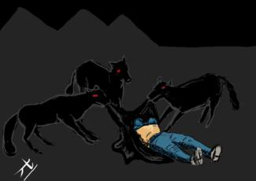
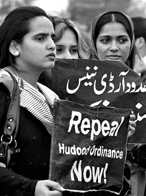
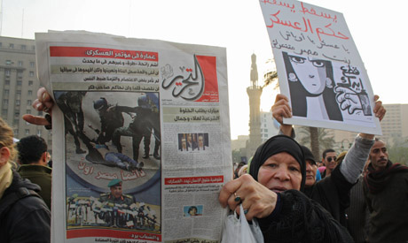
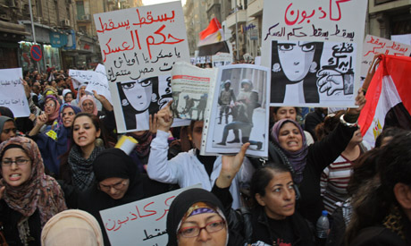
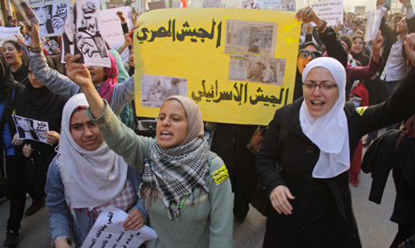

پذيرش > تریبون > گزارش كمپين > بیانیه اعتراضی سازمان ها زنان و تظاهرات گسترده علیه خشونتهای اخیر در مصر: ادامه نظامی (...)

 بیانیه اعتراضی سازمان ها زنان و تظاهرات گسترده علیه خشونتهای اخیر در مصر: ادامه نظامی گری به مثابه خشونت بیشتر بر مدافعان حقوق زن است بیانیه اعتراضی سازمان ها زنان و تظاهرات گسترده علیه خشونتهای اخیر در مصر: ادامه نظامی گری به مثابه خشونت بیشتر بر مدافعان حقوق زن است
30 آذر 1390 - - نسخه قابل چاپ
بیانیه ی پنج سازمان دفاع از حقوق زنان در ارتباط با خشونتهای اخیر در مصر: ادامه ی نظامی گری به مثابه خشونت بیشتر بر مدافعان حقوق زن

تغییر برای برابری: نفیسه آزاد
پنج روز از اعتراضات مردم مصر نسبت به حضور نظامیان در قدرت می گذرد. این اعتراضات به شکلی بسیار خشونت بار توسط نظامیان و نیروهای امنیتی سرکوب شده به شکلی که تا به امروز بیش از 10 کشته بر جای گذاشته است. زنان نیز از این خشونت ها بی نصیب نمانده اند، ویدئویی که روز پیش از ضرب و شتم و برهنه کردن زن مصری در رسانه های مجازی پخش شد، خشم و اعتراض بسیاری را در سراسر منطقه و دنیا برانگیخت.

در پی این اتفاقات پنج سازمان مدافع حقوق زنان در مصر با انتشار بیانیه ای به آنچه ادامه ی نظامی گری و خشونت بر زنان خوانده اند اعتراض کردند. در این بیانیه آمده است: «هدف قرار دادن و خشونت علیه زنان اکتیویست به گواه فیلم ها و عکس های موجود در طول اعتراضات اخیر در مصر به شکل فزاینده ای اعمال شده است. خشونتی که پیش از انقلاب مصر علیه زنان مدافع حقوق بشر اعمال می شد، امروز نیز به شکلی واضح توسط کسانی که مسئولیت امور کشور را بر عهده دارند، یعنی سازمان های مختلف امینتی و باقی ماندگان حکومت پیشین پی گرفته می شود.»

زنان در این بیانیه ضمن تاکید بر سیستماتیک بودن اعمال خشونت بر زنان توسط نیروهای ارتش در ناآرامی های اخیر، بیان می دارند که این خشونت ها از ماه مارچ و با ماجرای تست باکرگی از زنان دستگیر شده آغاز شده و تا به امروز ادامه دارد.

در بخش های دیگری از این بیانیه آمده است که:« زنان از سنین و گرایش های مختلفی در این تظاهرات حضور داشتند و همگی توسط نیروهای پلیس، ارتش و لباس شخصی مورد ضرب و شتم، آزار جنسی و خشونت قرار گرفتند. آزار و خشونت جنسی زنان در تظاهرات را نمی¬توان جدا از این موضوع دید، که نیروهای نظامی در قدرت قصد دارند زنان را با حاشیه رانده و آنها را از طلب کردن حقوقشان و مشارکت در سرنوشت مصر در این مقطع حیاتی از تاریخ بازدارند... ما مصرانه خواستار حمایت از زنان برای دفاع از حقوقشان هستیم و هرگونه خشونت را با هدف خانه نشین کردن زنان و بازداشتن آنان از مشارکت در روند دموکراتیزه کردن مصر پس از انقلاب محکوم می کنیم و اعلام می داریم که زنان از موفقیت هایی که در دهه ی پیش به دست آورده اند قدم پس نخواهند کشید»

در قسمت دیگر این بیانیه ، امضا کنندگان ضمن انتقاد شدید از سیاست های رسانه ای در مصر و به ویژه رسانه های دولتی که از انتشار اخبار مربوط به خشونت ها و اتفاقات اخیر به ویژه در مورد زنان سر باز می زنند، این موضوع را ادامه ی سیاست های زمان مبارک دانسته و خواستار آن شدند که رهبران رسانه¬ای جایشان را به کسانی بدهند که به آزادی و دموکراسی در مصر پایبند باشند.
در بخش پایانی امضا کنندگان خواستار آن شده اند که خشونت¬های اخیر علیه تظاهر کنندگان که شامل زنان نیز می شود توسط دولت به رسمیت شناخته شود، پس از آن کمیته ای حقیقت یاب برای شناسایی مسئولان این وقایع معرفی شود تا با بررسی دقیق و منصفانه ی این خشونت ها اقدامات لازم را انجام دهند. امضا کنندگان همچنین خواستار تغییرات جدی در سیاست های رسانه ای شده اند که آن را ادامه ی سیاست های دوران مبارک در عدم پوشش سوء رفتارهای دولت دانسته اند.
در ادامه ی اعتراضات به خشونت نیروهای ارتش و پلیس، امروز هزاران زن مصری در قاهره تظاهرات کردند.در عکس-هایی که از این تظاهرات منتشر شده است زنان با حمل پلاکاردهایی ارتش مصر را در اعمال خشونت با ارتش اسرائیل مقایسه کرده و خواستار کناره گیری نظامیان از حکومت و پایان خشونت ها شده اند.
اسامی امضا کنندگان این بیانیه به شرح زیر است:
1. Nazra for Feminist Studies.
2. Cairo Institute for Human Rights Studies.
3. Association for Freedom of Thought and Expression.
4. Hisham Mubarak Law Center.
5. Women and Memory Forum.
عکس و فیلم¬های مرتبط را در این آدرس¬ها می توانید مشاهده کنید:
Video: http://youtu.be/4iboFV-yeTE -
http://youtu.be/LXR_w_1mrr0 -
http://youtu.be/mKEmez6P-aQ
Photos: http://flic.kr/p/aWJygr
Undersigned Organizations
ارسال به
بالاترین
،
توییتر
،
فریندفید
،
فیسبوک
در همين بخش :
 دهمین دورۀ مراسم تندیس صدیقه دولت آبادی ۱۳۹۲ دهمین دورۀ مراسم تندیس صدیقه دولت آبادی ۱۳۹۲
کارت پستالهایی به بهانهی هشت مارس و به یاد همهی مبارزین راه برابری
بیانیه بیش از 350 تن از مدافعان حقوق زنان به مناسبت روز جهانی زن؛ زنان هر روز فرودستتر میشوند
لباسی که برای تن ما دوخته اند! /اعظم بهرامی
چالشها و چشمانداز فعالیت مدنی زنان
ديگر بخش ها :
طرح یک میلیون امضا
|
مقالات
|
سایت نوشته ها
|
اخبار
|
گزارش كمپين
|
گفت و گو
|
علیه سکوت
|
كوچه به كوچه
|
نامه های شما
|
گزارش ویژه
|
گفتگو با اعضا
|
ویژه سالگرد کمپین
|
تصویر برابری
|
دل آرام علی
|
تریبون
|
مقالات
|
تاریخ شفاهی
|
خارج از چارچوب
|
کتابخانه
|
درباره کمپین
|
کمپین در شهرها
|
کمپین در بند
|
صدای تغییر
|
ویژه 22 خرداد
|
لایحه حمایت از خانواده
|
گالری
|
عشا مومنی
|
امیر یعقوبعلی
|
خدیجه مقدم
|
راحله عسگری زاده و نسیم خسروی
|
پروین اردلان،جلوه جواهری، مریم حسین خواه، ناهید کشاورز
|
زینب پیغمبرزاده
|
سعیده امین، سارا ایمانیان، محبوبه حسین زاده، ناهید کشاورز و همایون نامی
|
احترام شادفر
|
نسیم سرابندی زاده،فاطمه دهدشتی
|
وبلاگ مهمان
|
پرونده خرم آباد
|
دستگیری ها
|
مریم مالک
|
پرستو اللهیاری
|
مهرنوش اعتمادی
|
سمیه رشیدی
|
Other Languages
|
همراهان
|
«فراخوان کمپین ده روز با بهاره هدایت»
| English
|